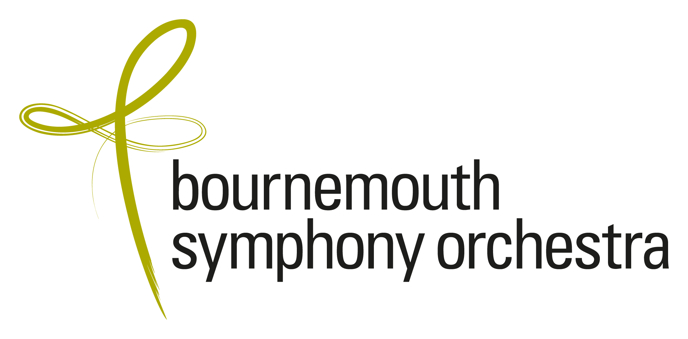

Conductor

Named a Classic FM 2026 Rising Star, Michal Oren is a conductor whose work is shaped by a deep sense of narrative and musical imagination. Originally from Tel-Aviv, Israel, she was recently announced as the next Calleva Assistant Conductor of the Bournemouth Symphony Orchestra for the 2026–2027 season.
She is one of six semi-finalists in the upcoming 80th Concours de Genève Conducting Competition (November 2026) and a current participant of the Taki Alsop Conducting Fellowship Mentoring Programme.
Full Biography
Michal Oren is announced as Bournemouth Symphony Orchestra's Calleva Assistant Conductor ahead of its 2026/27 season.
Read MoreMichal was selected as one of 10 participants (out of 190 applications) in the prestigious Gstaad Conducting Academy.
Read MoreMichal Oren is one of six semi-finalists in the Concours de Genève conducting competition, continuing in November 2026.
Read More